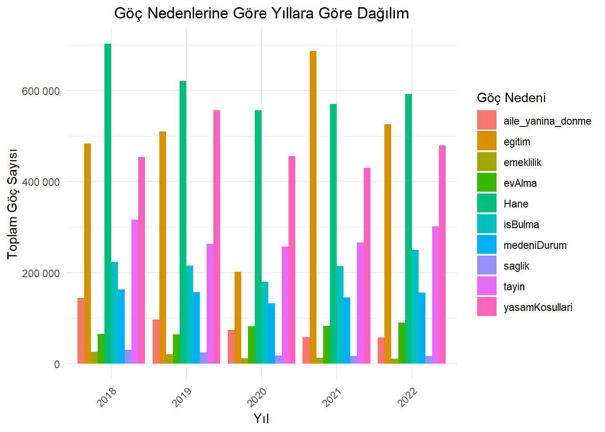
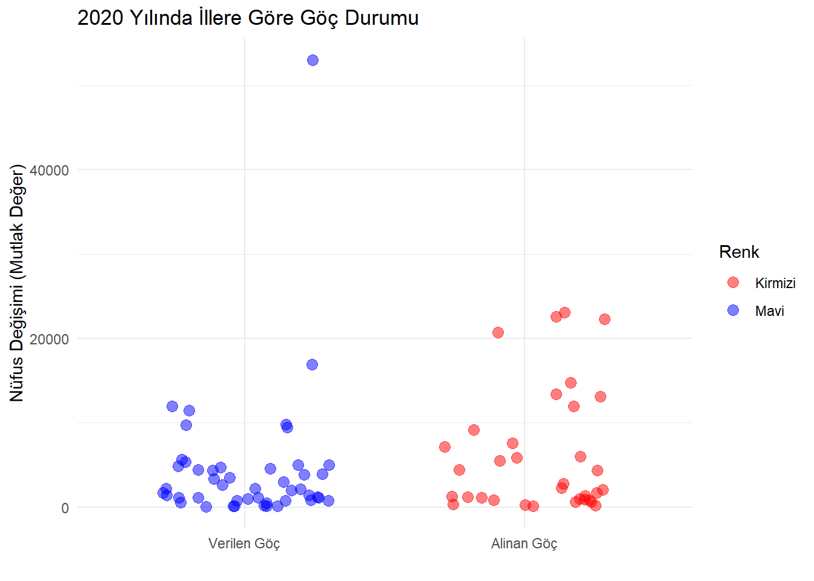
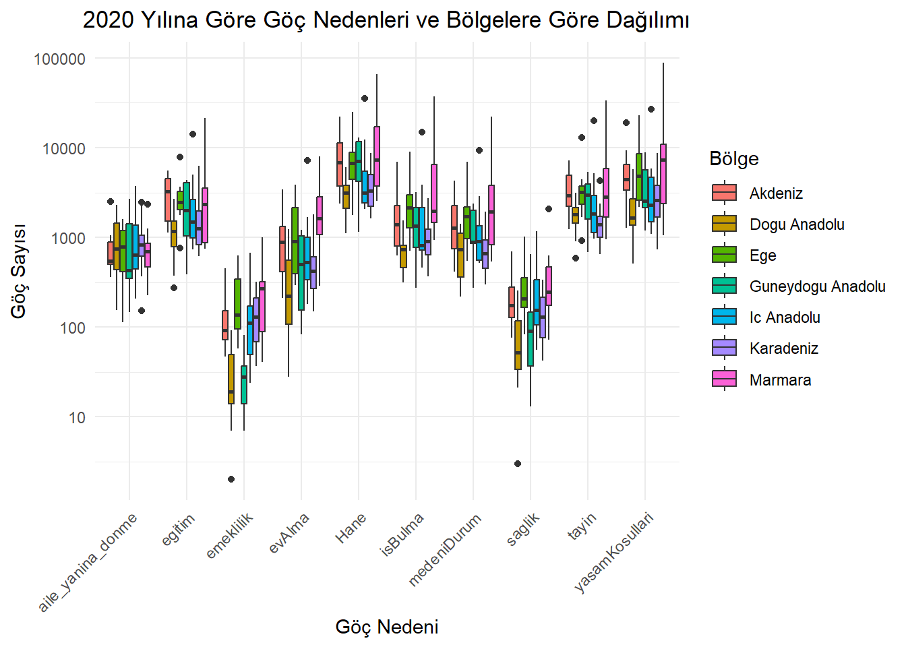

Bu veri setini seçmemizde bir kaç neden etkili olmuştur.
Analiz Amaçları: Göç istatistikleri, birçok farklı alanda önemli bilgiler sağlayabilir. Örneğin, ekonomik kalkınma, işgücü hareketleri, eğitim, sağlık hizmetleri talebi gibi konuları analiz etmek için göç verileri kullanılabilir.
Zaman Aralığı: Seçtiğimiz zaman aralığı (2018-2022), son beş yılda Türkiye’deki göç eğilimlerini incelememizi sağlamaktadır.Bu dönemdeki göç eğilimleri, ekonomik ya da sosyal değişikliklerin etkilerini değerlendirmemize yardımcı olabilir.
Kapsam: Veri setimizin kapsamı Türkiye genelindeki farklı illeri içermesi nedeniyle farklı bölgeler arasındaki göç sayılarını inceleme fırsatını da bize sunmaktadır.Bu, bölgesel kalkınma eğilimlerini ve farklı illerdeki yaşam koşullarının etkilerini anlamamıza yardımcı olmaktadır.
Değişkenlerin Çeşitliliği: Seçtiğimiz değişkenler, göç nedenlerini çeşitli açılardan analiz etmemize olanak tanır. Örneğin, iş bulma, eğitim imkanları, aile birleşimi gibi farklı faktörlerin göç kararları üzerindeki etkilerini değerlendirebiliriz
Toplumsal İhtiyaçlar: Göç istatistikleri, toplumun belirli ihtiyaçlarını anlamak için kullanılabilir. Örneğin, sağlık hizmetlerine erişim, yaşam koşulları, ev alma gibi göç nedenlerinin toplumsal etkileri değerlendirilebilir.
##veri setinin ilk bir kaç satırını göstermehead(alinan_goc)
# A tibble: 6 x 12
il yil tayin isBulma egitim medeniDurum yasamKosullari Hane
<chr> <dbl> <dbl> <dbl> <dbl> <dbl> <dbl> <dbl>
1 Adana 2022 6635 3620 7990 3273 10274 14153
2 Adiyaman 2022 1918 1222 3332 945 3612 4381
3 Afyonkarahisar 2022 2620 1918 6575 1164 3690 4228
4 Agri 2022 2810 877 2508 934 1992 4983
5 Amasya 2022 1643 1200 3639 798 1833 3645
6 Ankara 2022 23625 18872 36427 12054 27932 36157
# i 4 more variables: aile_yanina_donme <dbl>, saglik <dbl>, evAlma <dbl>,
# emeklilik <dbl>
Show the code
# Adana ili verisini seçmeadana_verisi <-subset(alinan_goc, il =="Hakkari")# Tayin sayılarını görselleştirmeggplot(data = adana_verisi, aes(x = yil, y = saglik)) +geom_bar(stat ="identity") +labs(x ="Yıl", y ="Sağlık Nedeni ile Yapılan Göç Sayısı") +ggtitle("Yıllara Göre Kilis İline Sağlık Nedeni ile Yapılan Göç Sayısı")
Show the code
# İstanbul ili verisini seçmeistanbul_verisi <-subset(alinan_goc, il =="Istanbul")# sağlık nedeni ile istanbula göç edenlerinin grafiğini çizmeggplot(data = istanbul_verisi, aes(x = yil, y = saglik)) +geom_bar(stat ="identity") +labs(x ="Yıl", y ="Sağlık Nedeni İle Yapılan Göç Sayısı") +ggtitle("Yıllara Göre Istanbul İline Sağlık Nedeni İle Yapılan Göç Sayısı")
Göç Nedenleri Arasındaki Korelasyonu Hesaplama ve Görselleştirme
Korelasyon matrisi görselleştirmesi (heatmap), veri setindeki değişkenler arasındaki ilişkileri görsel olarak anlamak için güçlü bir araçtır.Örneğin, pozitif korelasyonlar, bir değişkenin artışıyla diğer değişkenin de arttığını gösterir. Bu, iki değişken arasında bir ilişki olduğunu ve bir değişkenin diğerini etkileyebileceğini gösterir.
Değişkenler arasında korelasyon büyüklükleri incelendiğinde göç nedeni olarak tayin’in, medeni durum ve Hane ile pozitif yönlü ve güçlü bir ilişkisi olduğu görülmektedir. Ek olarak iş bulma ile yaşam koşulları arasında benzer şekilde pozitif yönlü ve güçlü bir ilişkisi olduğu görülmektedir.
Aile yanına dönme, göç nedenleri arasında en düşük oranda ilişkiye sahiptir.
Show the code
##cor() fonksiyonu kullanılarak alinan_goc veri setindeki belirli sütunlar arasındaki korelasyonlar hesaplanır.# Korelasyon matrisini hesapla##cor() fonksiyonu, alinan_goc veri setindeki 3. sütundan 11. sütuna kadar olan sütunlardaki değişkenler arasındaki korelasyonları hesaplar. use = "complete.obs" argümanı, eksik değerleri içeren gözlemleri hesaplama işleminden çıkarır.correlation_matrix <-cor(alinan_goc[, c(3:11)], use ="complete.obs")melted_corr_matrix <-melt(correlation_matrix)##Daha sonra, melt() fonksiyonu kullanılarak korelasyon matrisi eritilir##melted_corr_matrix <- melt(correlation_matrix) ggplot2 paketi kullanılarak korelasyon matrisi görselleştirilir. ##geom_tile() fonksiyonu ile korelasyon matrisi, renkli kareler olarak gösterilir. geom_text() fonksiyonu ile her karenin içine korelasyon değerleri yazdırılır. ##labs() fonksiyonu ile x ve y eksenlerine etiketler eklenir. guides() fonksiyonu ile renk gradyanı için bir renk skalası eklenebilir. Son olarak, theme() fonksiyonları ile grafik stili ayarlanır.# Ve Korelasyon matrisini görselleştirilirggplot(melted_corr_matrix, aes(Var1, Var2, fill = value)) +geom_tile() +geom_text(aes(label =sprintf("%.2f", value)), color ="black", size =3) +labs(x =" ", y =" ") +guides(color =guide_legend(title ="Değer")) +scale_fill_gradient2(low ="yellow", high ="red", mid ="white", midpoint =0.7) +theme_minimal() +theme(axis.text.x =element_text(angle =45, hjust =1))
Göç Nedeni ve Göç Sayısı Sütunları Oluşturmak
Aşağıdaki kod bloğunda göç nedenleri tek sütun içerisinde gruplanmıştır. Göç nedenlerinin il bazında nasıl gerçekleştiğini daha net görebilmek için bu gruplama işlemi yapılmıştır.
Show the code
##alinan_goc veri çerçevesindeki veriyi daha "düzenli" bir formata dönüştürür ve new_tidy_data adında yeni bir veri seti oluşturur. Buradaki amaç, veriyi daha analiz edilebilir hale getirmek ve veri işleme sürecini kolaylaştırmaktır##pivot_longer() fonksiyonu kullanılarak, veri çerçevesindeki sütunlar uzun formata dönüştürülür. Yani, her bir göç nedeni bir sütun yerine, il ve yil sütunları sabit kalacak şekilde, diğer sütunlar göç nedeni ve göç sayısı olacak şekilde yeniden yapılandırılır##cols = -c(il, yil): il ve yil sütunları dışındaki tüm sütunlar işleme alınır names_to = "gocNedeni": Sütun adları, "gocNedeni" adında yeni bir sütuna dönüştürülür.##mutate() fonksiyonu kullanılarak, "gocNedeni" sütunu karakter veri tipine dönüştürülür##head() fonksiyonu kullanılarak, yeni oluşturulan new_tidy_data veri çerçevesinin ilk altı satırı ekrana yazdırılırnew_tidy_data <- alinan_goc %>%pivot_longer(cols =-c(il, yil), names_to ="gocNedeni", values_to ="gocSayisi") %>%mutate(gocNedeni =as.character(gocNedeni))head(new_tidy_data)
# A tibble: 6 x 4
il yil gocNedeni gocSayisi
<chr> <dbl> <chr> <dbl>
1 Adana 2022 tayin 6635
2 Adana 2022 isBulma 3620
3 Adana 2022 egitim 7990
4 Adana 2022 medeniDurum 3273
5 Adana 2022 yasamKosullari 10274
6 Adana 2022 Hane 14153
Veri setimizde eksik değerler var mı?
Veri setimizin yapısı nasıl?
Show the code
##veri setindeki sütun adlarını döndürürcolnames(new_tidy_data)
[1] "il" "yil" "gocNedeni" "gocSayisi"
Show the code
##new_tidy_data veri setindeki her sütundaki eksik değerlerin sayısını hesaplamacolSums(is.na(new_tidy_data))
il yil gocNedeni gocSayisi
0 0 0 0
Show the code
##new_tidy_data veri setinde herhangi bir eksik değer olup olmadığını kontrol eder.##any(): Bu fonksiyon, bir vektör veya matrisin herhangi bir elemanının belirtilen koşulu sağlayıp sağlamadığını kontrol eder. any(is.na(new_tidy_data))
tibble [4,050 x 4] (S3: tbl_df/tbl/data.frame)
$ il : chr [1:4050] "Adana" "Adana" "Adana" "Adana" ...
$ yil : num [1:4050] 2022 2022 2022 2022 2022 ...
$ gocNedeni: chr [1:4050] "tayin" "isBulma" "egitim" "medeniDurum" ...
$ gocSayisi: num [1:4050] 6635 3620 7990 3273 10274 ...
Show the code
##new_tidy_data veri setindeki tekrarlanan satırların sayısını hesaplar.sum(duplicated(new_tidy_data))
[1] 0
Veri setimizdeki Göç Sayılarının bulunduğu sütunun özet istatistikleri görülmektedir.
2018-2022 yılları arasındaki minimum göç sayısı 2’dir.
2018-2022 yılları arasındaki maximum göç sayısı 152.756’dır.
2018-2022 yılları arasında yapılan ortalama göç sayısı 2979,1’dir
Show the code
##new_tidy_data veri setindeki "gocSayisi" adlı sütunun özet istatistikleri hesaplanırsummary(new_tidy_data$gocSayisi)
Min. 1st Qu. Median Mean 3rd Qu. Max.
2.0 407.2 1222.5 2979.1 3156.0 152756.0
Minimum göç sayısının 2 olduğunu aşağıdaki tabloda görüyoruz.
2018-2022 yılları arasında minimum göç 2022 yılında emeklilik nedeniyle Hakkari’ye yapılmıştır.
Show the code
##new_tidy_data veri setindeki verileri gocSayisi sütununa göre sıralama ve ilk altı satırını ekrana yazdırmanew_tidy_data %>%arrange(gocSayisi) %>%head()
Maximum göç sayısının 152.756 olduğunu aşağıdaki tabloda görüyoruz.
2018-2022 yılları arasında maximum göç 2019 yılında yaşam koşulları nedeniyle İstanbul’a yapılmıştır.
Show the code
##new_tidy_data veri setindeki verileri gocSayisi sütununa göre azalan sıraya göre sıralama ve ilk altı satırını ekrana yazdırmanew_tidy_data %>%arrange(desc(gocSayisi)) %>%head()
# A tibble: 6 x 4
il yil gocNedeni gocSayisi
<chr> <dbl> <chr> <dbl>
1 Istanbul 2019 yasamKosullari 152756
2 Istanbul 2019 Hane 102314
3 Istanbul 2020 yasamKosullari 88975
4 Istanbul 2022 yasamKosullari 87557
5 Istanbul 2021 yasamKosullari 80500
6 Istanbul 2021 egitim 77296
Show the code
# İstanbul ili verisini seçmeistanbul_verisi2 <-subset(alinan_goc, il =="Istanbul")# Tayin sayılarını görselleştirmeggplot(data = istanbul_verisi2, aes(x = yil, y = yasamKosullari)) +geom_bar(stat ="identity") +labs(x ="Yıl", y ="Yaşam Koşulları") +ggtitle("İstanbul İline Yıllara Göre Yaşam Koşulları Nedeniyle Yapılan Göç Sayısı")

Grafikte de 2019 yılında yaşam koşulları nedeniyle 150000’den daha fazla kişinin İstanbul’a göç ettiğini görüyoruz. 2020 yılından itibaren ise sayı düşmüştür. Bunun nedeni büyük ihtimalle pandemidir.
Show the code
## new_tidy_data veri setindeki veriler arasından gocSayisi sütunundaki en yüksek 10 değerigöstermenew_tidy_data %>%top_n(10, gocSayisi)
# A tibble: 10 x 4
il yil gocNedeni gocSayisi
<chr> <dbl> <chr> <dbl>
1 Istanbul 2022 yasamKosullari 87557
2 Istanbul 2022 Hane 64099
3 Istanbul 2021 egitim 77296
4 Istanbul 2021 yasamKosullari 80500
5 Istanbul 2020 yasamKosullari 88975
6 Istanbul 2020 Hane 65478
7 Istanbul 2019 yasamKosullari 152756
8 Istanbul 2019 Hane 102314
9 Istanbul 2018 yasamKosullari 72873
10 Istanbul 2018 Hane 74627
Veri Setindeki Toplam Göç Sayısını Yazdıran Fonksiyon
Show the code
##new_tidy_data veri setindeki toplam göç sayısını hesaplamak için bir fonksiyon tanımlar.toplam_goc_sayisi <-function(new_tidy_data, il, yil) { toplam <-sum(new_tidy_data$gocSayisi[new_tidy_data$il == il & new_tidy_data$yil == yil])return(toplam)}##belirtilen il ve yıl için new_tidy_data veri çerçevesindeki göç sayılarını filtreler ve toplama # Örneğin, Adana'daki 2022 yılındaki toplam göç sayısını bulmak için:print(paste("Adana'da 2022 yılındaki toplam goc sayısı:", toplam_goc_sayisi(new_tidy_data, "Adana", 2022)))
[1] "Adana'da 2022 yılındaki toplam goc sayısı: 48123"
Show the code
print(paste("İstanbul'da 2022 yılındaki toplam goc sayısı:", toplam_goc_sayisi(new_tidy_data, "Istanbul", 2019)))
[1] "İstanbul'da 2022 yılındaki toplam goc sayısı: 452868"
2 Analizler
Show the code
new_tidy_data <- new_tidy_data %>%mutate(bolge =case_when( il %in%c("Istanbul", "Bursa", "Kocaeli", "Tekirdag","Balikesir","Canakkale","Bilecik","Edirne","Kirklareli","Sakarya","Yalova") ~"Marmara", il %in%c("Izmir", "Aydin", "Manisa","Afyonkarahisar","Denizli","Kutahya","Manisa","Mugla","Usak") ~"Ege", il %in%c("Ankara", "Konya", "Eskisehir","Cankiri","Corum","Kayseri","Kirsehir","Konya","Nevsehir","Nigde","Sivas","Yozgat","Aksaray","Karaman","Kirikkale") ~"Ic Anadolu", il %in%c("Artvin", "Giresun", "Ordu","Rize","Sinop","Tokat","Trabzon","Zonguldak","Amasya","Bolu","Gumushane","Kastamonu","Samsun","Sinop","Bayburt","Bartin","Karabuk","Duzce") ~"Karadeniz", il %in%c("Adana", "Antalya","Burdur","Hatay","Isparta","Kahramanmaras","Osmaniye") ~"Akdeniz", il %in%c("Adiyaman","Diyarbakir","Gaziantep","Mardin","Siirt","Sanliurfa","Batman","Sirnak","Kilis") ~"Guneydogu Anadolu", il %in%c("Agri","Bingol","Bitlis","Elazig","Erzincan","Erzurum","Hakkari","Kars","Malatya","Muş","Tunceli","Van","Ardahan","Igdir") ~"Dogu Anadolu",TRUE~"Diger"# Diğer bölgelere dahil olan iller için bir kategori belirleyin ))ggplot(new_tidy_data %>%filter(yil ==2020 , bolge !="Diger"), aes(gocNedeni, gocSayisi, color = bolge)) +geom_point() +labs(title ="2020 Yılına Göre Göç Nedenleri ve Bölgelere Göre Dağılımı",x ="Goc Nedeni",y ="Goc Sayısı",color ="Bolge") +theme_minimal() +theme(plot.title =element_text(hjust =0.10),axis.text.x =element_text(angle =45, hjust =1))

Bu grafikte bölgeler bazında alınan göçlerin sebepleri gösterilmiştir. Grafikte görüldüğü üzere aile yanına dönme, emeklilik ve sağlık nedenlerinin Türkiye’dki göç hareketliliğine etkisinin diğer nedenlere göre az olduğu gözlemlenmektedir. Öte yandan Hane ve yaşam koşulları sebebi ile göç hareketliliği diğer kategorilere nazaran daha fazladır. Bölge bazında Marmara ve İç Anadolu bölgeleri için uç değerler incelendiğinde büyük şehirlerin etkisinden kaynaklandığı gözlemlenmiştir.
Show the code
##boxplot data görselleştirmenew_tidy_data <- new_tidy_data %>%mutate(bolge =case_when( il %in%c("Istanbul", "Bursa", "Kocaeli", "Tekirdag","Balikesir","Canakkale","Bilecik","Edirne","Kirklareli","Sakarya","Yalova") ~"Marmara", il %in%c("Izmir", "Aydin", "Manisa","Afyonkarahisar","Denizli","Kutahya","Manisa","Mugla","Usak") ~"Ege", il %in%c("Ankara", "Konya", "Eskisehir","Cankiri","Corum","Kayseri","Kirsehir","Konya","Nevsehir","Nigde","Sivas","Yozgat","Aksaray","Karaman","Kirikkale") ~"Ic Anadolu", il %in%c("Artvin", "Giresun", "Ordu","Rize","Sinop","Tokat","Trabzon","Zonguldak","Amasya","Bolu","Gumushane","Kastamonu","Samsun","Sinop","Bayburt","Bartin","Karabuk","Duzce") ~"Karadeniz", il %in%c("Adana", "Antalya","Burdur","Hatay","Isparta","Kahramanmaras","Osmaniye") ~"Akdeniz", il %in%c("Adiyaman","Diyarbakir","Gaziantep","Mardin","Siirt","Sanliurfa","Batman","Sirnak","Kilis") ~"Guneydogu Anadolu", il %in%c("Agri","Bingol","Bitlis","Elazig","Erzincan","Erzurum","Hakkari","Kars","Malatya","Muş","Tunceli","Van","Ardahan","Igdir") ~"Dogu Anadolu",#TRUE ~ "Diger" # Diğer bölgelere dahil olan iller için bir kategori belirleyin ))ggplot(new_tidy_data %>%filter(yil ==2020 , bolge !="Diger"), aes(x = gocNedeni, y = gocSayisi, fill = bolge)) +geom_boxplot() +labs(title ="2020 Yılına Göre Göç Nedenleri ve Bölgelere Göre Dağılımı",x ="Göç Nedeni",y ="Göç Sayısı",fill ="Bölge") +theme_minimal() +theme(plot.title =element_text(hjust =0.5),axis.text.x =element_text(angle =45, hjust =1))+scale_y_continuous(trans ='log10', labels =function(x) format(x, scientific =FALSE)) # Y eksenini logaritmik ölçekleme yaparak ayarla

grafik, 2020 yılına ait göç nedenleri ve Türkiye’nin bölgelerine göre dağılımını logaritmik ölçekte gösteren bir kutu grafiği (box plot) biçimindedir. Kutu grafikler, veri dağılımının merkezi eğilimini, yayılımını ve aykırı değerlerini göstermek için kullanılır. Her kutu, verinin medyanını, alt ve üst çeyreklerini (yani %25 ve %75’lik dilimlerini), ve aykırı değerleri temsil eder. Bu grafikten çıkarılabilecek başlıca gözlemler şunlardır:
Bölgesel Farklılıklar:
Marmara Bölgesi: Marmara, çoğu göç nedeninde yüksek medyan değerlere sahip, bu da bölgenin diğerlerine göre daha fazla göç aldığını gösteriyor. İş bulma, eğitim ve aile yanına dönme gibi nedenlerde özellikle belirgin. Doğu ve Güneydoğu Anadolu: Bu bölgeler, göç sayıları açısından genellikle daha düşük medyan değerlere sahip, bu da daha az göç aldıklarını veya bu bölgelerden göç veren kişi sayısının daha fazla olduğunu düşündürebilir.
Göç Nedenleri Arasındaki Farklar:
İş Bulma ve Eğitim: Bu iki neden, çoğu bölgede yüksek göç sayıları ile öne çıkıyor. Bu, özellikle genç nüfusun ve iş arayanların daha iyi fırsatlar peşinde diğer bölgelere taşındığını gösteriyor. Sağlık: Sağlık nedeniyle yapılan göçler, bölgeden bölgeye farklılık gösteriyor, ancak bazı bölgelerde (örneğin Ege ve İç Anadolu) bu nedenle göç sayısı diğerlerinden daha yüksek.
Aykırı Değerler: Grafikteki aykırı değerler (kutuların üst ve altında yer alan noktalar), olağandışı yüksek veya düşük göç sayılarını gösterir. Örneğin, bazı bölgelerde iş bulma ve eğitim nedeniyle göç sayılarındaki olağan dışı artışlar dikkat çekiyor.
Logaritmik Ölçek: Grafikte logaritmik ölçek kullanılması, göç sayılarının geniş aralıklarını daha iyi göstermek için yapılmış. Bu sayede düşük ve yüksek değerler arasındaki farklar daha kolay fark edilebilir.
Show the code
##boxplot data görselleştirmenew_tidy_data <- new_tidy_data %>%mutate(bolge =case_when( il %in%c("Istanbul", "Bursa", "Kocaeli", "Tekirdag","Balikesir","Canakkale","Bilecik","Edirne","Kirklareli","Sakarya","Yalova") ~"Marmara", il %in%c("Izmir", "Aydin", "Manisa","Afyonkarahisar","Denizli","Kutahya","Manisa","Mugla","Usak") ~"Ege", il %in%c("Ankara", "Konya", "Eskisehir","Cankiri","Corum","Kayseri","Kirsehir","Konya","Nevsehir","Nigde","Sivas","Yozgat","Aksaray","Karaman","Kirikkale") ~"Ic Anadolu", il %in%c("Artvin", "Giresun", "Ordu","Rize","Sinop","Tokat","Trabzon","Zonguldak","Amasya","Bolu","Gumushane","Kastamonu","Samsun","Sinop","Bayburt","Bartin","Karabuk","Duzce") ~"Karadeniz", il %in%c("Adana", "Antalya","Burdur","Hatay","Isparta","Kahramanmaras","Osmaniye") ~"Akdeniz", il %in%c("Adiyaman","Diyarbakir","Gaziantep","Mardin","Siirt","Sanliurfa","Batman","Sirnak","Kilis") ~"Guneydogu Anadolu", il %in%c("Agri","Bingol","Bitlis","Elazig","Erzincan","Erzurum","Hakkari","Kars","Malatya","Muş","Tunceli","Van","Ardahan","Igdir") ~"Dogu Anadolu",#TRUE ~ "Diger" # Diğer bölgelere dahil olan iller için bir kategori belirleyin ))ggplot(new_tidy_data %>%filter(yil ==2019 , bolge !="Diger"), aes(x = gocNedeni, y = gocSayisi, fill = bolge)) +geom_boxplot() +labs(title ="2019 Yılına Göre Göç Nedenleri ve Bölgelere Göre Dağılımı",x ="Göç Nedeni",y ="Göç Sayısı",fill ="Bölge") +theme_minimal() +theme(plot.title =element_text(hjust =0.5),axis.text.x =element_text(angle =45, hjust =1))+scale_y_continuous(trans ='log10', labels =function(x) format(x, scientific =FALSE)) # Y eksenini logaritmik ölçekleme yaparak ayarla
grafik, 2019 yılına ait Türkiye’nin çeşitli bölgelerine göre göç nedenleri ve sayıları dağılımını kutu grafiği (box plot) formatında göstermektedir. Her kutu, o bölgedeki göç sayılarının medyanını, alt ve üst çeyreklerini (%25 ve %75’lik dilimlerini) ve aykırı değerleri temsil eder. Bu grafik, bölgesel göç hareketlerinin çeşitliliğini ve göç nedenlerine göre dağılımını anlamak için kullanışlıdır. İşte bazı anahtar gözlemler:
Bölgesel Farklılıklar:
Marmara Bölgesi: Bu bölge, özellikle iş bulma, eğitim ve yaşam koşulları gibi nedenlerle yüksek göç sayılarını gösteriyor. Marmara’nın ekonomik ve eğitim imkanları bu yüksek sayıları açıklayabilir. Ege ve İç Anadolu: Bu bölgeler de göç sayılarında yüksek değerlere sahip, özellikle eğitim ve sağlık gibi nedenlerle.
Göç Nedenlerinin Analizi:
Eğitim (Mor): Eğitim amacıyla yapılan göçler genellikle yüksek sayılarda olup, özellikle Marmara, Ege ve İç Anadolu bölgelerinde belirgin. Üniversitelerin ve diğer eğitim kurumlarının yoğun olduğu bölgeler bu eğilimi gösteriyor. İş Bulma (Yeşil): İş bulma amacıyla yapılan göçler, Marmara ve Ege gibi ekonomik olarak daha gelişmiş bölgelerde daha yüksek. Bu, iş imkanlarının bu bölgelerde daha fazla olduğunu gösteriyor.
Aykırı Değerler ve Değişkenlik: Kutu grafiklerdeki aykırı değerler (noktalar), olağan dışı yüksek veya düşük göç sayılarını gösterir. Bu aykırı değerler, göç hareketlerindeki özel durumları veya beklenmedik olayları işaret edebilir. Göç sayılarının değişkenliği, bölgesel ekonomik veya sosyal faktörlerin etkisini yansıtabilir. Örneğin, bir bölgede bir yıl içinde açılan yeni bir fabrika, iş bulma nedeniyle göçleri artırabilir.
Logaritmik Ölçek Kullanımı: Grafikte logaritmik ölçek kullanılması, çok düşükten çok yükseğe uzanan değerleri daha net göstermek amacıyla yapılmıştır. Bu ölçekleme, küçük ve büyük değerler arasındaki ilişkileri daha anlaşılır kılar. Bu tür bir kutu grafiği, göç dinamiklerini derinlemesine analiz etmek ve bölgesel farklılıkları daha iyi anlamak için kritik bilgiler sunar. Bölgeler arası ekonomik, eğitim, sağlık ve yaşam koşullarındaki farklılıklar, göç hareketlerini doğrudan etkileyen faktörler arasındadır.
Show the code
# Veri setindeki göç nedenlerini yıllara göre topla##group_by() fonksiyonu kullanılarak new_tidy_data veri setindeki "yil" ve "gocNedeni" sütunlarına göre gruplanır. Daha sonra summarise() fonksiyonu ile her yıl ve göç nedeni kombinasyonu için toplam göç sayısı hesaplanır.summarized_data <- new_tidy_data %>%group_by(yil, gocNedeni) %>%summarise(total_gocSayisi =sum(gocSayisi), .groups ="drop")# Bar plot oluşturggplot(summarized_data, aes(x =factor(yil), y = total_gocSayisi, fill = gocNedeni)) +geom_bar(stat ="identity", position ="dodge") +labs(title ="Göç Nedenlerine Göre Yıllara Göre Dağılım",x ="Yıl",y ="Toplam Göç Sayısı",fill ="Göç Nedeni") +theme_minimal() +theme(plot.title =element_text(hjust =0.5),axis.text.x =element_text(angle =45, hjust =1)) +scale_y_continuous(labels = scales::number_format())
Bu grafik, 2018’den 2022’ye kadar çeşitli göç nedenlerine göre Türkiye içinde yapılan göç sayılarını gösteriyor. Renkler, farklı göç nedenlerini temsil ediyor. Grafikten yapılabilecek önemli gözlemler şunlardır:
Göç Nedenleri:
Aile Yanına Dönme (Pembe): Bu nedenle yapılan göçler, özellikle 2021 yılında belirgin bir artış gösteriyor. Bu, pandemi sonrasında ailelerin bir araya gelme isteğinin artmış olabileceğini düşündürebilir. Eğitim (Mor): Eğitim nedeniyle yapılan göçlerde 2020 yılında bir düşüş gözlemleniyor, bu da pandemi nedeniyle eğitimin çevrimiçi ortamlara taşınmasıyla ilişkilendirilebilir. 2021 ve 2022 yıllarında ise eğitimle ilişkili göçlerde tekrar bir artış göze çarpıyor.
Pandemi Etkisi:
2020 yılında hemen hemen tüm göç nedenlerinde bir düşüş gözlemleniyor. Pandeminin getirdiği kısıtlamalar ve belirsizlikler, göç hareketlerini önemli ölçüde azaltmış görünüyor. Özellikle sağlık (turkuaz) ve iş bulma (koyu yeşil) nedenli göçlerde bu düşüş belirgin.
2021 ve 2022 Yılında Göç Artışı:
2021 yılında, pandemi sonrası normalleşme süreçlerinin başlamasıyla birlikte tüm kategorilerde göç sayılarında bir artış gözleniyor. Bu artış, insanların ertelenmiş göç kararlarını uygulamaya koyduklarını gösteriyor. 2022 yılında, özellikle ev alma (mavi) ve yaşam koşulları (yeşil) ile ilgili göçlerde artış sürüyor. Bu, ekonomik ve sosyal stabiliteye duyulan güvenin artışını ve bireylerin yaşam standartlarını yükseltme çabalarını yansıtabilir. Grafikten çıkarılan bu gözlemler, Türkiye’deki göç trendlerinin sosyo-ekonomik faktörler, pandemi gibi küresel sağlık krizleri ve eğitim gibi temel ihtiyaçlar tarafından nasıl etkilendiğini açıkça gösteriyor.
Show the code
summarized_data2 <- new_tidy_data %>%filter(!is.na(bolge)) %>%# NA olmayan bölge değerlerini filtrelegroup_by(bolge, yil) %>%summarise(total_gocSayisi =sum(gocSayisi), .groups ="drop")# Bar plot oluşturggplot(summarized_data2, aes(x =factor(yil), y = total_gocSayisi, fill = bolge)) +geom_bar(stat ="identity", position ="dodge") +labs(title ="Bölge ve Yıllara Göre Göç Sayısı",x ="Yıl",y ="Toplam Göç Sayısı",fill ="Bölge") +theme_minimal() +theme(plot.title =element_text(hjust =0.5),axis.text.x =element_text(angle =45, hjust =1)) +scale_y_continuous(labels = scales::number_format())
Bu grafik, 2018’den 2022’ye kadar Türkiye’nin çeşitli bölgelerine yapılan göç sayılarını yıllara göre göstermektedir. Renkler farklı bölgeleri temsil ediyor. Grafikten yapılabilecek önemli gözlemler aşağıdaki gibidir:
Marmara Bölgesine Yönelik Göçler:
Marmara bölgesi, grafikte pembe rengiyle temsil edilmiş ve sürekli olarak en yüksek göç alımına sahip bölge olarak öne çıkıyor. Bu, Marmara Bölgesi’nin ekonomik ve sosyal imkanları ile büyük şehirleri barındırması nedeniyle Türkiye’nin en çekici bölgelerinden biri olduğunu gösteriyor. Pandemi Etkisi:
2020 yılında, diğer yıllara kıyasla bütün bölgelerde göç sayısında gözle görülür bir düşüş var. Bu düşüş, COVID-19 pandemisinin yol açtığı seyahat kısıtlamaları ve ekonomik belirsizliklerle ilişkilendirilebilir. Bölgeler Arası Farklılıklar:
Ege (mavi) ve İç Anadolu (yeşil) bölgeleri de görece yüksek göç alımı göstermiş, özellikle 2021 ve 2022 yıllarında. Bu iki bölge de ekonomik ve eğitim imkanları ile bilinir. Güneydoğu Anadolu (açık mavi) ve Doğu Anadolu (kırmızı) bölgeleri ise daha düşük göç sayılarına sahip. Bu, ekonomik aktivite ve yaşam koşullarının diğer bölgelere göre daha az çekici olmasından kaynaklanıyor olabilir.
2019’da Artış ve Sonrasında Düşüş:
2019 yılında, çoğu bölge için göç sayısında bir artış gözlemleniyor. Bu artış, belki de o dönemdeki ekonomik iyileşme veya politik faktörlerle ilgili olabilir. Ancak, 2020’de pandeminin etkisiyle bu sayılar düşüşe geçmiş. Bu grafik, Türkiye içindeki göç dinamiklerini bölgelere göre değişimini anlamak açısından önemli veriler sunmaktadır. Bölgelerin ekonomik, sosyal ve kültürel çekiciliğinin, göç hareketleri üzerindeki etkisini göstermesi bakımından kıymetlidir. Pandemi gibi global olayların bu dinamikleri nasıl etkileyebileceği konusunda da fikir verir.
Show the code
Sys.setlocale("LC_CTYPE", "turkish")
[1] "Turkish_Türkiye.1254"
Show the code
library(dplyr)library(ggplot2)new_tidy_data <- new_tidy_data %>%mutate(bolge =case_when( il %in%c("Istanbul", "Bursa", "Kocaeli", "Tekirdag","Balikesir","Canakkale","Bilecik","Edirne","Kirklareli","Sakarya","Yalova") ~"Marmara", il %in%c("Izmir", "Aydin", "Manisa","Afyonkarahisar","Denizli","Kutahya","Manisa","Mugla","Usak") ~"Ege", il %in%c("Ankara", "Konya", "Eskisehir","Cankiri","Corum","Kayseri","Kirsehir","Konya","Nevsehir","Nigde","Sivas","Yozgat","Aksaray","Karaman","Kirikkale") ~"Ic Anadolu", il %in%c("Artvin", "Giresun", "Ordu","Rize","Sinop","Tokat","Trabzon","Zonguldak","Amasya","Bolu","Gumushane","Kastamonu","Samsun","Sinop","Bayburt","Bartin","Karabuk","Duzce") ~"Karadeniz", il %in%c("Adana", "Antalya","Burdur","Hatay","Isparta","Kahramanmaras","Osmaniye") ~"Akdeniz", il %in%c("Adiyaman","Diyarbakir","Gaziantep","Mardin","Siirt","Sanliurfa","Batman","Sirnak","Kilis") ~"Guneydogu Anadolu", il %in%c("Agri","Bingol","Bitlis","Elazig","Erzincan","Erzurum","Hakkari","Kars","Malatya","Muş","Tunceli","Van","Ardahan","Igdir") ~"Dogu Anadolu",TRUE~"Diger"# Diğer bölgelere dahil olan iller için "Diger" kategorisi ))# Veri setindeki göç nedenlerini yıllara göre toplasummarized_data <- new_tidy_data %>%group_by(bolge, gocNedeni) %>%summarise(total_gocSayisi =sum(gocSayisi), .groups ="drop")# Bar plot oluşturggplot(summarized_data, aes(x = bolge, y = total_gocSayisi, fill = gocNedeni)) +geom_bar(stat ="identity", position ="dodge") +labs(title ="Göç Nedenlerine Göre Yıllara Göre Dağılım",x ="Yıl",y ="Toplam Göç Sayısı",fill ="Göç Nedeni") +theme_minimal() +theme(plot.title =element_text(hjust =0.5),axis.text.x =element_text(angle =45, hjust =1)) +scale_y_continuous(labels = scales::number_format())
Bu grafik, Türkiye’nin farklı bölgelerine yapılan göç sayılarını ve bu göçlerin nedenlerini yıllara göre göstermektedir. Göç nedenleri renklerle ifade edilmiş ve bu renkler bölgesel dağılımı da içeriyor. Grafikten çıkarılabilecek önemli noktalar aşağıda sıralanmıştır:
Bölgesel Farklılıklar:
Marmara Bölgesi: Marmara bölgesi, grafikte özellikle iş bulma (koyu yeşil), eğitim (mor), ve aile yanına dönme (pembe) nedenleriyle en yüksek göç alımını gösteriyor. Bu, Marmara’nın ekonomik ve sosyal olarak Türkiye’nin en cazip bölgesi olmasından kaynaklanıyor olabilir. Ege ve İç Anadolu: Ege ve İç Anadolu bölgeleri de yüksek göç alımı gösteriyor, özellikle ev alma (mavi) ve sağlık (turkuaz) nedenleriyle. Göç Nedenleri:
Eğitim ve İş Bulma: Eğitim ve iş bulma, genel olarak tüm bölgelerde önemli göç nedenleri arasında yer alıyor. Bu, genç nüfusun eğitim ve iş imkanları için daha büyük şehir veya bölgelere taşınma eğilimini gösteriyor. Sağlık: Sağlık nedeniyle yapılan göçler, özellikle İç Anadolu ve Ege bölgelerinde dikkat çekiyor, bu bölgelerin sağlık hizmetlerine erişim açısından önemli merkezler olabileceğini düşündürüyor.
Zaman İçindeki Trendler:
Pandemi Etkisi: Grafikten kesin yıllar anlaşılmamakla birlikte, eğer 2020 yılındaki genel düşüş varsa, bu COVID-19 pandemisinin etkisini yansıtıyor olabilir. Pandemi, göç hareketlerini azaltmış ve çeşitli nedenlerle göç edecek kişilerin kararlarını ertelemelerine neden olmuş olabilir. Son Yıllardaki Artış: Grafikte son yıllarda genel bir artış trendi görülüyor ki bu da pandemi sonrası normalleşme sürecinin etkisiyle insanların daha önce erteledikleri göç kararlarını hayata geçirdiklerini gösteriyor. Bu grafik, Türkiye’deki göç trendlerini ve bu trendlerin bölgesel ekonomik ve sosyal faktörlerle nasıl ilişkili olduğunu anlamak için önemli veriler sunmaktadır.